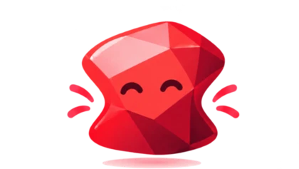
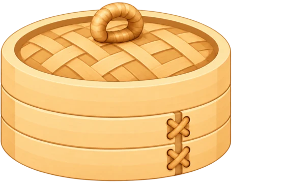
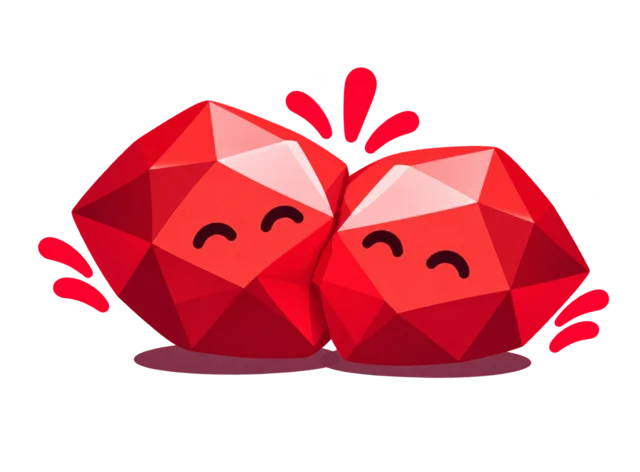
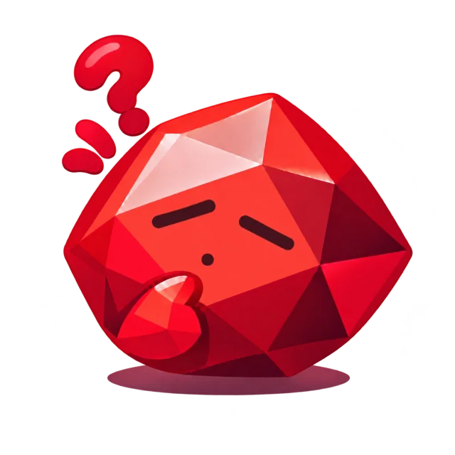
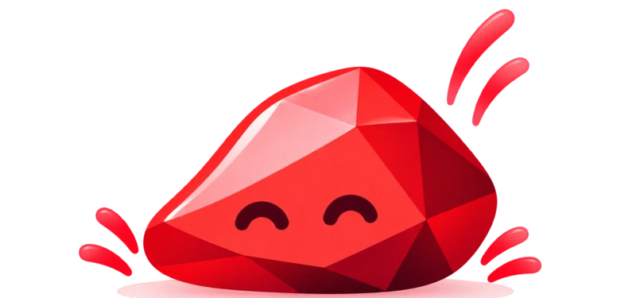
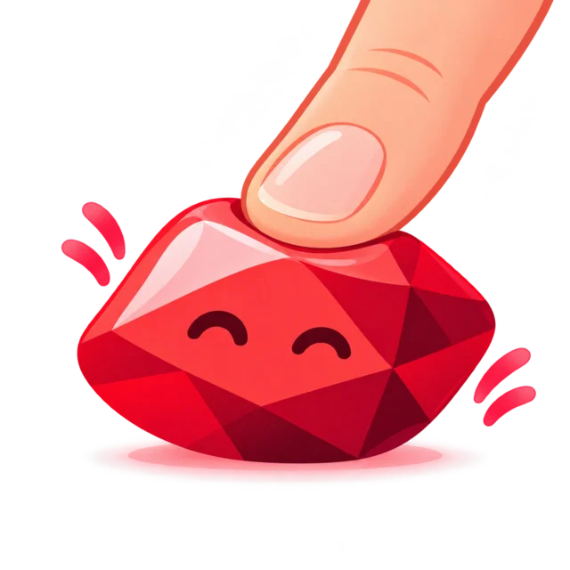
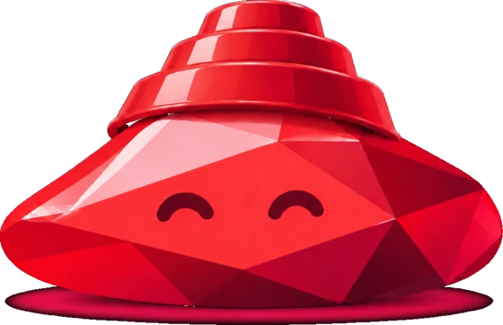
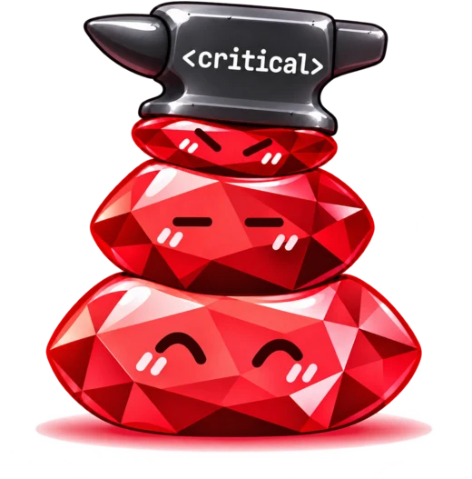

Don't just use AI to write code. Use AI to not need code.
Squishling lets a class run as ordinary Ruby or hand the work to an LLM, and return the same checked,
typed answer either way. Write Ruby only where it's cheaper than the tokens.
With Squishling, every Ruby class can land somewhere between "an LLM handles it" and "code handles it."
Now you have an easy way to define, and adjust, that balance based off of the needs of a class, your velocity, or
how much tech debt your team is able to carry.
Drag the slider to see which tradeoff makes the most sense for the class you are building.
FlexibleThe model handles it. Higher cost per request.
EfficientDeterministic code. Cost per request near zero.
Most codebases today
← Slide left to find the optimal spot
Traditional software
Fully deterministic, cheap to scale. Logical complexity and failure states often balloon with features.
Ruby 100%LLM 0%
Why
Tech debt is leverage, if you can price it
Debt isn't always bad. Used well, it gives you leverage, and tech debt works the same way: it can be an asset or a
liability, depending on what you do with it.
The catch is that nobody can price it. It's hard to quantify the advantage tech debt gives you if you can't
quantify what it costs. Here's a common place where it quietly gets expensive.
The problem
Some requirements are too expensive to maintain in code
Say you're in health tech. You sign a clinical client and need their patient data in your system. There's a
standard for that, FHIR, so it looks easy.
Day one
def call_parser(data)
fhir_parser.call(data)
end
A hundred clients later
def call_parser(client_name, data)
case client_name
when client_a then client_a_parser.call(data)
when client_b then client_b_parser.call(data)
when client_c then client_c_parser.call(data)
when client_d then client_d_parser.call(data)
when client_e then client_e_parser.call(data)
when client_f then client_f_parser.call(data)
when client_g then client_g_parser.call(data)
when client_h then client_h_parser.call(data)
# ... ad nauseam
No matter whether people or AI wrote it, this is terrible architecture:
It's hard to DRY.
Any change to a data format can break it, and every breakage is a scramble.
It adds cost to every new contract. The more clients you sell, the worse it gets.
The worst kind of debt: uncontrollable, unavoidable and unmanageable... and "better" code can't fix it.
The alternative
Same job. Different implementation.
class Parser
include Squishling
purpose "Please parse this data into a patient record."
output_schema PatientRecord
# def call(data)
# fhir_parser.call(data)
# end
end
Let the model take the first version, and look at what you get. Flexible by default, and it bends instead of
breaking.

Zero brittle code
Nothing to break when a format shifts.
Instant integration
A new client works on day one.
Flexibility
It copes with external factors you can't change.
The objection is cost: every request spends tokens. The answer:
Refactor the high-volume bits to be deterministic.
Keep AI for everything else.
Now your tech debt has a quantity you can measure.
How · 1. Describe it
Define the goal and the shape of the answer
Make a class squish. Give it a purpose and an output schema, and Squishling does the rest. This class has no
implementation at all, so every call is squished.

Squishling.configure do |config|
config.default_model = "claude-haiku-4-5-20251001"
# falls back to RubyLLM's default when nil
end
class Parser
include Squishling
purpose "Map the inbound record onto the schema..."
output_schema do
string :patient_name
string :patient_gender, enum: %w[male female trans unknown]
array :diagnosis_codes, of: :string
array :symptoms, of: :string
end
# no call method: every invocation is squished.
end
Run against 100 synthetic patient records (generated with Synthea):
73 / 100pass
$0.48per 100 calls
Every diagnosis code was right. The misses clustered in three places: names written HL7-style, gender codes, and
symptoms the model invented.
How · 2. Tune it
Only the purpose changed
class Parser
include Squishling
purpose <<~PURPOSE
Map the record onto the schema below.
Name: output "First Last" order, even if the source writes
it as HL7's LAST^FIRST, often in all caps.
Gender: translate to "male", "female", "trans", or "unknown".
"unknown" for any code you don't recognize, including HL7's
bare O / U / A / N letter codes. Never guess.
Symptoms: only from an explicit symptom field. A diagnosis is
not a symptom. Never infer one from a diagnosis name.
PURPOSE
...
end
95 / 100pass
$0.51per 100 calls
The two systematic failures that remain are HL7 letter codes and unlabeled SNOMED gender codes that need a
translation table, plus one dictation transcript with spoken digits.
Best practice: describe each field in the schema
This run kept the per-field rules in the purpose. A better home for them is a description: on
the field itself, as in this equivalent shape of the same class. The description travels with the field in the
schema the model fills in, so the guidance sits right where the value goes, and the purpose stays short and about
the goal. It also lives next to the type and enum it explains, so the two don't drift apart.
purpose "Map the record onto the schema."
output_schema do
string :patient_name,
description: "First Last order, even if the source writes it as HL7's LAST^FIRST, often in all caps."
string :patient_gender, enum: %w[male female trans unknown],
description: "\"unknown\" for any code you don't recognize, including HL7's bare O / U / A / N. Never guess."
array :symptoms, of: :string,
description: "Only from an explicit symptom field. A diagnosis is not a symptom."
end
The 95 / 100 above was measured with the rules in the purpose; this description version wasn't benchmarked.
Descriptions are guidance to the model, not enforcement: for rules that must hold, use an enum or squish_validate.
How · 3. Pay for accuracy
Use a harness to pay for higher accuracy
Squishsum compares two Squishling results. It asks the model twice, at the same time, and accepts
the answer only when both agree. That costs about twice the requests, so reach for it when a confidently wrong
answer costs more than a second one.

class Parser
include Squishling
...
squishling harness: :squishsum
end
When the two results match, you get the first one. When they differ, Squishling raises
Squishling::DisagreementError, and squish_fallback decides what happens next. By default the
results must match exactly; pass compare: to say which fields have to agree.
Add a judge with judged_squishsum
When the two results differ, a judge looks at both and picks one, or rejects both. The judge can be a bigger chat
model, as here, or a fast decision model such as Jev.

class Parser
include Squishling
...
squishling model: "claude-haiku-4-5",
harness: { type: :judged_squishsum, judge: "claude-opus-5-5" }
# two Haiku samples; Opus judges when they differ
end
Run against the same 100 records:
99 / 100pass
$1.02per 100 calls
Four of the five misses are now right, for double the cost of the tuned purpose. The one that remains is a
reminder that a second opinion helps most with random mistakes, less with systematic misreadings.
Validation checks the shape of an answer, not that it's true.
Or create your own harness
Register a harness under a name and use it like a built-in. It decides how to use the escalation, and gets
samples, judges, squawk reports and squish_fallback for free. This one asks two models, and
calls in a third to break a tie:
class Tiebreaker < Squishling::Harness::Base
option :tiebreaker, :step, required: true
def call(run, tiebreaker:)
# Ask the first two models at the same time.
first, second = run.samples(run.stages.first(2))
# You decide what "agree" means.
return first if run.agree?(first, second, ->(a, b, **) { a.priority == b.priority })
# They disagree: ask the strongest model.
run.escalate(tiebreaker)
end
end
Squishling.register_harness(:tiebreaker, Tiebreaker)
class TicketTriager
include Squishling
squishling escalation: [
{ model: "claude-haiku-4-5", priority: 10 },
{ model: "gemma-4b", priority: 10 }
],
harness: { type: :tiebreaker, tiebreaker: "claude-opus-5-5" }
purpose "Assign a priority and a team."
output_schema do
string :priority, enum: %w[low medium high]
string :team
end
end
Every primitive returns the same validated, typed result, so you can compare fields directly.
Options are checked when you declare the harness, before any request is made.
Use squish_validate for rules the schema can't express. A failed check rejects that sample or attempt.
A harness that raises DisagreementError or InvalidOutputError goes to the method's
squish_fallback, like the built-ins.
The built-in options, and the rest of the plugin point, are covered in the
harness docs.
How · 4. Harden the common shapes
Code the standard shapes. Squish the rest.
A quick look at the data shows 63% of the requests fit a standard format. So route those to the
parser you already trust, and squish the rest:

class Parser
include Squishling
...
squishling model: "claude-haiku-4-5",
harness: { type: :judged_squishsum, judge: "claude-opus-5-5" }
def call(data)
return fhir_parser.call(data) if fhir_message?(data)
squish!
end
end
95 / 100pass
$0.12per 100 calls
Same 95 out of 100, the same five misses, and 76% cheaper than the tuned-purpose run that squishes every request. The router moved this integration from fully
flexible to mostly efficient without a rewrite, and without betting up front.
The four runs, side by side
Run
Pass
Cost per 100 calls
Bare purpose
73 / 100
$0.48
Tuned purpose
95 / 100
$0.51
Two samples and a judge
99 / 100
$1.02
Code the 63%, squish the rest
95 / 100
$0.12
Results from the talk's demo, using 100 synthetic records and Anthropic Claude models. They show the
shape of the trade, not a benchmark of your data.
The result
Day-one integrations at a fraction of the cost
Integrations work on day one.
Low cost per request.
Total LLM cost well below maintenance cost.
And you can keep revisiting this balance as the business evolves.
It runs backwards, too
Drowning under a thousand legacy parsers? Find the ones at the tail of your usage curve. Squish them instead.
Then delete the code. Stop living in fear that a tiny client finds the breaking change you shipped two quarters ago.
The philosophy
Small parts, composed
The steps above show what a squishling does. These three principles decide where one belongs in your system.
Squishlings are atomic
One small job, one clear goal, one output shape, like the
Parser.
Small, fast, explainable
Start with the cheapest model that reliably does the job, and tune before reaching for more.
A tuned purpose on Haiku matched a second sample and a judge at half the cost.
A reliable system isn't one with no squish in it. It's one where every squish is small, atomic and
easy to replace.
Beyond parsing
When a service call fails, squish it
Not parsing health data? Anything that talks to another service has the same shape. Keep your Ruby parser for well-formed payloads, and hand the rest to the
model. Save yourself, and the engineers who come after you, uncountable headaches.

class WebhookHandler
include Squishling
...
def call(service:, body:)
VendorWebhooks.fetch(service).parse(body)
rescue VendorWebhooks::ParseError => e
squish!(context: { parse_error: e })
end
end

With squish!, the model gets the call's inputs plus whatever context you pass, such as the error, and
still has to return the same validated result. If it can't, squish_fallback decides what happens next.
Beyond integrations
Even a bug in your own code can squish
Any rescued exception can be the trigger, including a plain old bug:
class SomeHelperMethod
def call(payload)
payload.dig("user", "email")
end
end
payload = { "user" => "alice@example.com" }
# oops: the caller sent a string, not a hash
SomeHelperMethod.new.call(payload)
# => TypeError: String does not have #dig method
And after:
class SomeHelperMethod
include Squishling
purpose "Return the user's email address from this payload."
output_schema { string :email }
def call(payload)
payload.dig("user", "email")
rescue => e
squish!(context: { error: e })
end
end
SomeHelperMethod.new.call(payload).email
# => "alice@example.com"
If the answer is in the input or the error message, squish can find and fix it.
It's a net, not the repair. Still fix the bug, and check the cases where a plausible wrong value
would be costly.

Put a number on it
Measure your tech debt in tokens
Code you haven't written is debt you haven't taken on. A squished path has a running cost you can read off a
meter, so "should we write a parser for this?" turns into arithmetic: what the path costs in tokens each month,
against what the code costs to write and keep.
Pick a template, then change the numbers. The first one is deliberately a case where writing code is not
worth it, and the last two show what changes when squishing earns its keep.
The model path
The code path
What squishing gets you
$0token cost per month
$0value squishing returns per month
$0code upkeep per month
$0one-time cost to write it
To get your real numbers, you can read token usage a few ways:
Add the gem, configure your provider keys in RubyLLM (OpenAI, Anthropic Claude, Google Gemini and others work),
and describe your first class.
# Gemfile
gem "squishling"
Requires Ruby 3.3 or newer. The
README covers each use case, and the
docs cover routing, schemas, configuration,
failure handling, harnesses and measuring token spend.
On the roadmap
Framework-specific defaults.
Support for non-RubyLLM implementations.
Output format annotations.
Squish the star button and leave issues on GitHub.